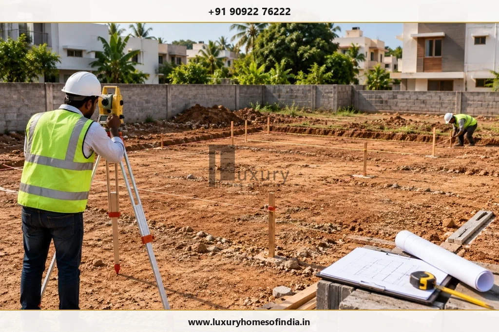
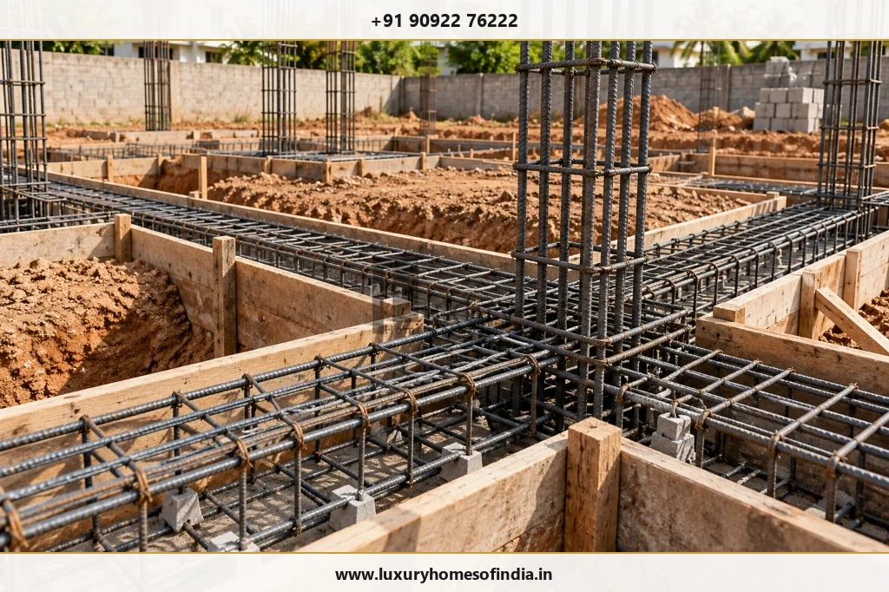
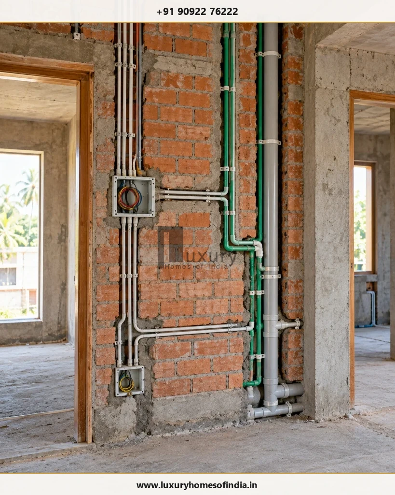
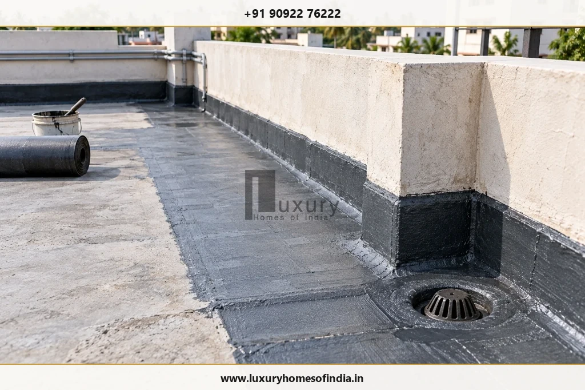

Quick Guide: The 12 Stages of House Construction
The sequence below provides a structured planning framework rather than a universal construction specification. Foundation systems, structural methods, site conditions and the approved design can change how individual activities are arranged.
| Stage | Main Purpose | Important Homeowner Check |
|---|---|---|
| 1. Budget & requirements | Define scope, functional priorities, spaces, and project budget. | Confirm inclusions, exclusions, and contingency funds. |
| 2. Site & soil assessment | Understand ground conditions, boundaries, and site constraints. | Review survey and geotechnical soil investigation records. |
| 3. Design & engineering | Coordinate architectural layout, RCC structure, and MEP services. | Confirm latest approved coordinated working drawings. |
| 4. Approvals & prep | Address applicable permissions, builder agreement, and permits. | Confirm building sanction before regulated work commences. |
| 5. Site prep & setting out | Prepare work zone, site storage, and mark building gridlines. | Verify layout, setbacks, dimensions, and datum levels. |
| 6. Excavation & foundation | Transfer building loads safely to supporting soil stratum. | Inspect reinforcement and soil condition before concrete pour. |
| 7. Plinth & ground-floor base | Prepare transition to building superstructure and floor plate. | Check backfill compaction, services, and damp-proofing. |
| 8. Structural framework | Construct columns, beams, floor slabs, and staircases. | Review rebar binding, formwork stability, and concrete cubes. |
| 9. Masonry & concealed services | Build walls and install concealed conduits and piping routes. | Photograph layouts and pressure-test pipes before plastering. |
| 10. Plastering & waterproofing | Prepare smooth surfaces and protect building against moisture. | Verify pond-testing of wet areas and curing protocols. |
| 11. Finishing & external works | Install flooring, cabinetry, fixtures, painting, and gates. | Match installed items to approved specification schedule. |
| 12. Testing & handover | Verify systems, resolve snag list, and transfer keys and records. | Obtain as-built drawings, warranties, and signed handover list. |
Stage 1: Budget and Requirement Planning
Every house construction project should begin with a clear brief. Before detailed drawings are developed, decide how the home must function, which spaces are essential and which features can be added later.
For an independent house or luxury villa, the brief may cover:
- Bedrooms, bathrooms, guest accommodation and storage.
- Kitchen, utility, parking and service areas.
- Home office, entertainment or family gathering spaces.
- Natural light, ventilation, privacy and circulation.
- Lift provisions, air-conditioning, security and smart-home infrastructure where required.
- Landscaping, outdoor living and interior finish preferences.
Prepare a Realistic Project Budget
Separate the main construction scope from items that may be quoted or managed independently. These can include professional fees, approvals, site development, utility connections, interiors, landscaping, specialist equipment and contingency provisions.
The builder's agreement should define the scope, specifications, exclusions, payment milestones, variation process and responsibilities for procurement and coordination.
Homeowner Checkpoint: Prepare a written requirement brief and agree on the scope before detailed design and cost commitments advance.
Stage 2: Site Assessment and Soil Investigation
The plot influences foundation design, site drainage, access, excavation planning and the placement of the building.
A site assessment considers boundaries, levels, neighbouring properties, access, existing utilities and visible constraints. Where required, a geotechnical investigation provides information about the ground conditions needed for appropriate foundation design.
Key activities include:
- Checking available property and survey documents.
- Confirming boundaries, reference levels and access.
- Assessing drainage routes and areas where water may accumulate.
- Investigating soil and groundwater conditions as appropriate.
- Identifying excavation constraints and neighbouring structures.
- Reviewing site access for workers, machinery and material deliveries.
For Chennai and surrounding areas, seasonal rainfall, surface-water management and groundwater conditions deserve attention during planning. Conditions vary from plot to plot, so a nearby building's foundation should not be treated as a substitute for project-specific engineering.

Homeowner Checkpoint: Retain the survey, relevant soil investigation findings and foundation design documents. Ask the responsible engineer to address unexpected ground conditions before work proceeds.
Stage 3: Architectural Design and Structural Engineering
Architectural design establishes the home's spaces, circulation, appearance, daylight and ventilation. Structural engineering establishes the load-bearing system and the details required for the proposed building.
Depending on the project, the coordinated design package may include:
- Floor plans, elevations and sections.
- Structural drawings and reinforcement details.
- Electrical and plumbing layouts.
- Door and window schedules.
- Staircase and specialist details.
- Lighting, air-conditioning and service provisions.
- Material, fixture and finish specifications.
- Interior coordination and equipment requirements.
For a luxury home, design coordination is particularly important where ceilings, custom joinery, lighting, air-conditioning, plumbing and smart-home systems interact.
A late change to a staircase, bathroom layout, window opening or service route can affect several other trades. Structural members should never be cut or altered to accommodate services without appropriate professional approval.
Homeowner Checkpoint: Confirm that site teams use the latest coordinated drawings and that revisions are recorded before they are implemented.
Stage 4: Approvals and Pre-Construction Preparation
The permissions and documents required for a house depend on the property, proposed building and competent authority.
Before construction starts, the project team should establish which planning permissions, building approvals and other requirements apply to the specific site. For a Chennai-area project, the responsible authority and applicable process should be confirmed for the property rather than assumed from another locality.
Pre-construction preparation commonly includes:
- Reviewing property and survey documentation.
- Coordinating applicable planning and building permissions.
- Confirming approved drawings and relevant conditions.
- Finalising the builder agreement and scope of work.
- Preparing the construction programme and payment milestones.
- Identifying material suppliers and specialist contractors.
- Arranging temporary utilities, access and site safety measures.
Responsibility for documentation and submissions should be clearly allocated between the homeowner, design professionals and builder. Support with an application does not guarantee approval.
Homeowner Checkpoint: Confirm that required permissions and preconditions are addressed before proceeding with work that requires them.
Stage 5: Site Preparation and Setting Out
Site preparation converts the design and survey information into a workable construction area.
Typical activities include clearing the designated work zone, arranging storage and temporary facilities, establishing reference levels and marking the building layout in accordance with the relevant drawings.
The team should also consider safe access, temporary drainage, excavation space, material storage and protection of neighbouring property.
Setting out deserves particular care because errors in building position, gridlines, dimensions or levels can affect the foundation, room layouts, drainage and compliance with applicable requirements.
Homeowner Checkpoint: Have the building position, reference levels and critical dimensions checked by the responsible professional before excavation begins.
Stage 6: Excavation and Foundation Construction
The foundation transfers building loads to the supporting ground. Its form, depth, dimensions and reinforcement depend on the structural design and the site's conditions.
The construction sequence may include excavation, inspection of founding conditions, preparation of the base, placement of specified concrete, reinforcement and formwork installation, concrete placement, curing and required protective treatments.
The details differ between foundation systems such as isolated or combined footings, raft foundations and pile foundations. The project's engineering documents determine the correct approach.
What should be checked?
- Excavation dimensions and specified levels.
- Actual ground conditions at the founding level.
- Reinforcement placement, cover and detailing.
- Formwork stability and embedded items.
- Concrete supply, placement and compaction controls.
- Required curing procedures and inspection records.
- Specified protective or waterproofing details.

Reinforcement and other critical work should be inspected before concrete makes it inaccessible. Unexpected soft soil, water ingress or other significant changes should be referred to the responsible engineer instead of addressed through improvised modifications.
Homeowner Checkpoint: Retain photographs and inspection records of critical foundation work before it is covered.
Stage 7: Plinth and Ground-Floor Base
The plinth connects the foundation to the building above. The ground-floor base is then prepared in accordance with the approved construction details.
Depending on the design, activities may include plinth beams, foundation-related masonry, backfilling, compaction, specified pest-control or damp-proofing treatments, under-floor service installation and preparation of the floor build-up.
Plinth levels and finished floor levels should be coordinated with external ground levels, drainage, access and entrance thresholds.
Poorly compacted fill and inadequate moisture protection can contribute to settlement, floor cracking or dampness. The appropriate controls depend on the specified materials and construction system.
Homeowner Checkpoint: Verify required compaction, service routes, levels and moisture-protection details before the floor base is concealed.
Stage 8: Structural Framework — Columns, Beams, Slabs and Stairs
The structural framework creates the building's load-bearing system. In a reinforced-concrete house, this commonly includes columns, beams, slabs and stairs designed for the project.
The construction team follows the structural drawings for reinforcement, concrete, formwork, temporary supports, curing and the sequence of work. Multi-storey homes repeat relevant activities floor by floor.
Before concrete placement, the required reinforcement, cover, embedded items, formwork and relevant details should be checked. After placement, the team should follow the specified concrete protection, curing, testing and formwork-removal requirements.
Concrete should not be judged ready for the next activity solely by appearance or an informal timetable. Required decisions depend on the applicable specifications and engineering requirements.
Homeowner Checkpoint: Maintain required reinforcement inspection records, concrete test information and approvals for critical structural work.
Stage 9: Masonry and Concealed Electrical and Plumbing Services
Once the relevant structural work is ready, masonry and building-services activities progress in coordination with the drawings.
Masonry Work
This may include internal and external walls, door and window openings, specified supporting details and preparation for plastering.
Concealed Building Services
Electrical and plumbing work may include:
- Conduits and cable routes.
- Switch, socket and lighting positions.
- Water-supply and drainage pipes.
- Kitchen and bathroom service points.
- Air-conditioning drainage and service provisions.
- Internet, security and smart-home infrastructure.
The exact sequence depends on the wall system and approved design. Services must be coordinated with structural members and other building systems.
Before the Walls Are Closed
Check that wall positions and openings match the drawings. Confirm the relevant electrical and plumbing routes, required pipe tests and accessibility for future maintenance.

Homeowner Checkpoint: Photograph concealed services, keep the approved layouts and complete required inspections and tests before plastering or other covering work.
Stage 10: Plastering and Waterproofing
Plastering prepares walls and ceilings for their specified finishes. Waterproofing protects selected parts of the building from water penetration.
Plastering
Surface preparation, the specified plaster system, required alignment and finish, and suitable drying or curing are important to the quality of subsequent painting and decorative finishes.
Waterproofing
Depending on the project, the system may be specified for bathrooms, shower areas, terraces, balconies, exposed ledges, basements, retaining structures, water tanks or other vulnerable areas.
The correct product and installation method depend on the substrate, exposure and intended use. Surface preparation, joints, corners, drainage falls and protective layers all matter.
Required water-tightness tests and inspections should be completed and recorded before finishes conceal the treated areas.
For homes around Chennai, roof drainage and seasonal rainwater management should be considered alongside the waterproofing system. A coating alone cannot compensate for every drainage or detailing problem.

Homeowner Checkpoint: Obtain the required waterproofing inspection and test records before tiling, ceiling closure or other covering work.
Stage 11: Finishing and External Development
Finishing brings together multiple trades and transforms the constructed shell into a usable home. The sequence should be planned to protect completed work and reduce avoidable rework.
Interior Finishing
Depending on the agreed scope, this may include flooring, wall tiling, doors, windows, hardware, painting, lighting, switches, sanitaryware, taps, kitchen cabinetry, wardrobes, ceilings, air-conditioning and other fixtures.
External Development
External work may include façade finishes, compound walls, gates, driveways, pathways, drainage, landscaping, outdoor lighting and final site-level adjustments.
For luxury homes, custom joinery, specialist lighting, imported or made-to-order finishes and bespoke furniture may require additional procurement coordination. Finalising selections early can help the team plan deliveries and avoid rushed substitutions.
Homeowner Checkpoint: Compare installed materials and fixtures with approved specifications, samples and purchase records. Document deviations and agree on corrective actions.
Stage 12: Testing, Final Inspection and Handover
Handover should confirm the completion of the agreed scope, the status of required system checks, outstanding defects and the transfer of project documentation.
Homeowner Handover Checklist
- Contracted construction work has been reviewed for completion.
- Electrical installations and protective devices have been checked as required.
- Water supply, plumbing and drainage systems have been tested.
- Specified waterproofing checks have been completed.
- Doors, windows, locks and hardware function correctly.
- Included fixtures, appliances and equipment have been checked.
- Visible finish defects have been documented.
- Outstanding items have named responsibilities and agreed rectification dates.
- Applicable completion or occupancy documentation has been addressed.
- Keys, manuals, warranties and relevant test records have been transferred.
- Agreed as-built drawings and project records have been provided.
- Final payments and any contractual retention have been reconciled.
A joint walkthrough with the builder helps establish which items are complete and which remain outstanding. The contract should explain how handover, retention and defect rectification are handled.
Homeowner Checkpoint: Retain a signed handover record and copies of relevant drawings, warranties, test reports and applicable approvals.
How Long Do the Stages of House Construction Take?
There is no single duration that applies to every house. The schedule depends on the building's size and complexity, soil conditions, design readiness, number of floors, procurement, labour availability, weather, approvals and the construction method.
| Work Package | Main Scheduling Consideration |
|---|---|
| Requirements and design | Decision-making speed, architectural revisions, client approvals, and multidisciplinary drawing coordination. |
| Soil investigation and approvals | Site accessibility, geotechnical reporting, civic scrutiny, and applicable authority statutory processes (GCC / CMDA / DTCP). |
| Site preparation and foundation | Ground conditions, groundwater dewatering, excavation depth, and foundation type (footings vs. raft vs. piles). |
| Plinth and structure | Building configuration, number of floors, formwork shuttering cycles, and mandatory concrete curing durations. |
| Masonry and concealed services | Coordination between masonry crews, electrical conduit grooving, and plumbing rough-in pressure testing. |
| Plastering and waterproofing | Substrate readiness, surface drying, waterproofing membrane curing, and mandatory 72-hour pond testing. |
| Finishes and external works | Material procurement lead times, custom joinery, bespoke marble fabrication, and multi-trade sequencing. |
| Testing and handover | Joint snagging inspections, functional commissioning of MEP equipment, defect closeout, and documentation handover. |
Some activities can overlap when the project team has established safe, coordinated work areas. However, overlapping activities must not bypass required structural inspections, curing provisions, service tests or waterproofing checks.
For project-specific scheduling, use an agreed baseline programme with milestones, dependencies, procurement dates and a process for recording changes.
Common Mistakes During House Construction
8 Critical Construction Mistakes to Prevent
1. Starting without coordinated drawings: Incomplete or conflicting drawings lead to on-site improvisation, service clashes, structural disputes, and expensive rework.
2. Ignoring site-specific ground conditions: Foundation design must be based on actual geotechnical borelog data and soil bearing capacity, not assumptions from nearby plots.
3. Selecting materials on purchase price alone: Materials must meet structural, environmental, and thermal performance standards. Compare durability and maintenance alongside initial unit costs.
4. Covering work before inspection: Foundation rebar, concealed electrical conduits, plumbing pipes, and waterproofing must be inspected and documented before concrete, plaster, or tiles cover them.
5. Making undocumented changes: Unrecorded alterations to layout, materials, or scope disrupt trade sequencing and create unexpected commercial disputes.
6. Treating drainage as an afterthought: Surface grading, stormwater runoff routes, roof slopes, and moisture barriers must be engineered into the civil base.
7. Delaying material selections: Late decisions on tiles, sanitaryware, windows, and custom carpentry halt construction and force rushed, substandard compromises.
8. Skipping a structured handover: Bypassing a formal snagging audit and documentation handover leaves unresolved defects and missing warranties.
How to Monitor Construction Progress
Homeowners do not need to supervise every trade personally, but they should establish a clear reporting and inspection process with their builder.
A useful system includes:
- A baseline schedule with defined milestones.
- Regular progress updates and dated site photographs.
- Written approvals for material selections and design changes.
- Inspection records for critical structural and concealed work.
- A list of pending decisions, deliveries and procurement risks.
- A record of variations, delays and corrective actions.
- A final defect list and documented handover.
Payments should follow the agreed contract and verified milestones. Where technical compliance needs assessment, use the responsible engineer or another appropriately qualified professional.
Frequently Asked Questions
The main stages are planning, site and soil assessment, design, approvals, site preparation, foundation, plinth, structural construction, masonry and services, plastering and waterproofing, finishing, and final inspection and handover.
Budget and requirement planning usually come first. Site assessment, soil investigation and design development follow, alongside the applicable approval and pre-construction process.
Depending on the construction system, the next activities may include plinth work, backfilling, ground-floor preparation and structural construction. The exact sequence follows the approved design.
Concealed routes are generally coordinated with structural and masonry work before walls or ceilings are closed. Fixtures and final connections are installed later as appropriate. Inspections and tests should be completed before relevant work is concealed.
Waterproofing should be installed when the specified substrate is ready and before the protective layers or finishes that conceal it. Required inspections and tests should be documented.
Yes, where the project team has established safe, coordinated work areas. Overlapping work must not damage completed work, create unsafe conditions or bypass required inspections.
Check the milestone defined in the agreement, verify the specified work, review required inspection records and document approved variations or deductions.
Depending on the contract and applicable requirements, the handover package may include keys, relevant as-built drawings, equipment manuals, warranties, test records, applicable completion or occupancy documents and an outstanding-defect record.
Inspections help establish whether materials, workmanship and completed activities meet the approved design and specifications. Finding issues before work is covered or the next stage begins can reduce rework.
Plan Your Home Construction Project with LHI
Luxury Homes of India provides residential construction-related services, including architectural planning, structural engineering, civil construction, luxury interior execution and turnkey project execution, as described on its published service pages.
For homeowners planning an independent house or luxury villa in Chennai and Chengalpattu, early coordination of design, construction scope, material selections and quality checkpoints can help make the project easier to manage.
Explore the following LHI resources:
Registered Office: #85, 4th Floor, Lotus Tower, Guindy, Chennai – 600032
Phone: +91 90922 76222 | Email: info@luxuryhomesofindia.in
Disclaimer: This article is for general educational purposes and is not a substitute for project-specific architectural, structural, electrical, plumbing or other professional advice. Construction methods, inspections and approvals depend on the site, building design, contract and applicable local requirements.